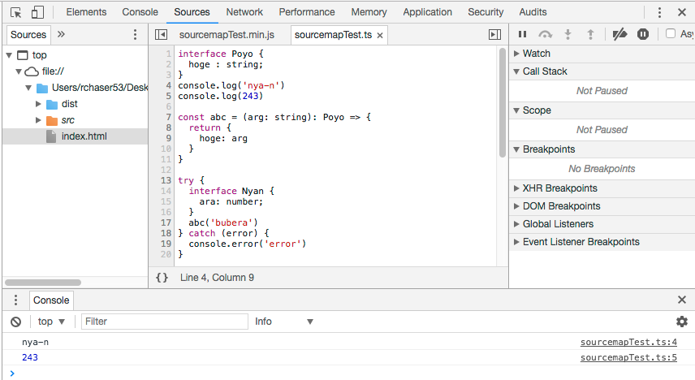
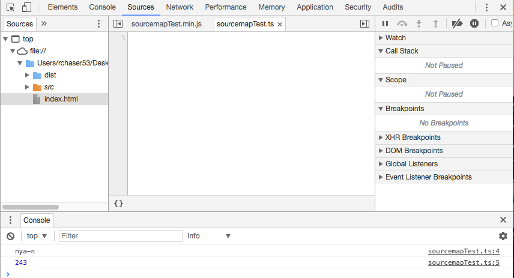
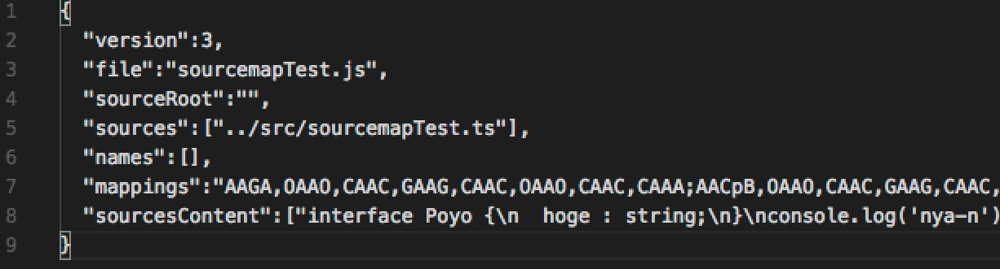
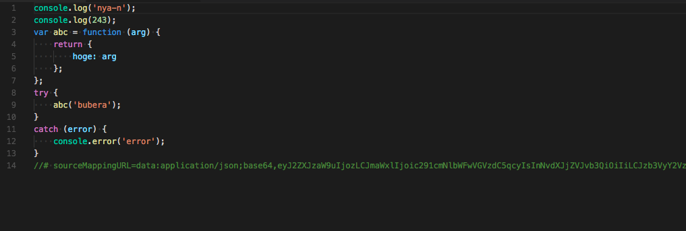

<!doctype html>
<html lang="en">

	<head>
		<meta charset="utf-8">

		<title>reveal.js – The HTML Presentation Framework</title>

		<meta name="description" content="A framework for easily creating beautiful presentations using HTML">
		<meta name="author" content="Hakim El Hattab">

		<meta name="apple-mobile-web-app-capable" content="yes">
		<meta name="apple-mobile-web-app-status-bar-style" content="black-translucent">

		<meta name="viewport" content="width=device-width, initial-scale=1.0, maximum-scale=1.0, user-scalable=no">

		<link rel="stylesheet" href="css/reveal.css">
		<link rel="stylesheet" href="css/theme/black.css" id="theme">

		<!-- Theme used for syntax highlighting of code -->
		<link rel="stylesheet" href="lib/css/zenburn.css">

		<!-- Printing and PDF exports -->
		<script>
			var link = document.createElement( 'link' );
			link.rel = 'stylesheet';
			link.type = 'text/css';
			link.href = window.location.search.match( /print-pdf/gi ) ? 'css/print/pdf.css' : 'css/print/paper.css';
			document.getElementsByTagName( 'head' )[0].appendChild( link );
		</script>

		<!--[if lt IE 9]>
		<script src="lib/js/html5shiv.js"></script>
		<![endif]-->

	</head>

	<body>

		<div class="reveal">

			<!-- Any section element inside of this container is displayed as a slide -->
			<div class="slides">
				<section>
					<p style="font-size:86px;">Source Map Revision 3</p>
					<p style="font-size:86px;">概要</p>
					<p><a href="https://twitter.com/rChaser53">@rchaser53</a></p>
					
				</section>

				<section style="text-align:left;">
					<section>
						<h6>誰?</h6>
						<table style="margin:0px;">
							<tbody>
								<tr>
									<td style="border-bottom:0px solid;">所属:</td>
									<td style="border-bottom:0px solid;">SORABITO 株式会社</td>
								</tr>
								<tr>
									<td style="border-bottom:0px solid;">名前:</td>
									<td style="border-bottom:0px solid;">吉澤 峻行</td>
								</tr>
							</tbody>
						</table>

					</section>
				</section>

				<section>
					<h2>SORABITO 株式会社</h2>
					<p>ALLSTOCKERとかいう重機のサイト作ってます</p>
					<p>資料作成間に合わない</p>
					<p>宣伝するから時間くれって言ったらくれました</p>
					<p>いい会社なのではないでしょうか?</p>
					<p>エンジニア募集中です</p>
				</section>

				<section>
					<h2>caution!</h2>
					<p>発表内容は発表者の独自調査によるものです</p>
					<p>間違ってたらすみません</p>
				</section>

				<section style="text-align:left;">
					<p>
						<a href="https://docs.google.com/document/d/1U1RGAehQwRypUTovF1KRlpiOFze0b-_2gc6fAH0KY0k/edit">規格(Source Map Revision 3)</a>
					</p>

					<p>2011/4/12年に初版に初版が公開</p>
					<p>非常に短く実質7pくらいしかないので気軽に読める量(気軽に読める内容とは言っていない)</p>
				</section>

				<section style="text-align:left;">
					<p>sourcemapの出力結果</p>
					<p>実際は1行だけど見づらいから改行している</p>
						<pre>
							<code class="hljs" data-trim contenteditable>
{
	"version" : 3,
	"file": "out.js",
	"sourceRoot": "",
	"sources": ["foo.js", "bar.js"],
	"sourcesContent": [null, null],
	"names": ["src", "maps", "are", "fun"],
	"mappings": "A,AAAB;;ABCDE;"
}
						</code>
					</pre>
				</section>

				<section style="text-align:left;">
					<p>interfaceと概要</p>
						<pre>
							<code class="hljs" data-trim contenteditable>
{
	version: 3;					// version 3なので3固定。
	file: string;					// ソースマップの対象ファイル
	sourceRoot?: string;			// 基準となるディレクトリ
	sources: string[]; 				// 対象ファイルの元となったファイル
	sourcesContent?: string[]; 		// 変換元となったソース
	names: string[];				// 対象ファイルに出力されている単語
	mappings: string; 				// 生成前のファイルとの位置関係
}
						</code>
					</pre>
				</section>
				
				<section>
					<section style="text-align:left;">
						<p style="font-size:48px;">sourcesRootとsources</p>
						<div style="display:block;height:5px;"></div>

						<p>変換前のファイルの位置を示す</p>
						<p>ファイルが存在しないと参照した際に何も表示されない</p>
						<p>sourcesRootが空文字なケースもある</p>
						<p>(sourcesに全部書かれている)</p>
					</section>

					<section style="text-align:left;">
						<p>対象のファイルが存在する場合</p>
						
					</section>
					
					<section style="text-align:left;">
						<p>対象のファイルが存在しない場合</p>
						
					</section>
				</section>

				<section>
					<section style="text-align:left;">
						<p style="font-size:48px;">sourcesContent</p>
						<div style="display:block;height:5px;"></div>

						<p>変換前のソース</p>
						<p>ts=>jsであればtsのファイルの内容が出力されている</p>
						<p>sourcesより優先される</p>
					</section>

					<section>
						<p>こんな感じに書かれている</p>
						<p>サーバに変換前のファイルを配置しなくてよくなる</p>
						
					</section>
				</section>

				<section style="text-align:left;">
					<p style="font-size:48px;">name</p>
					<div style="display:block;height:5px;"></div>

					<p>変換後のファイルにの単語が配列として保存されている</p>
					<p>mappingsで使用される</p>
					<p>重複されて記述されることはない</p>
					<p>[]でも普通に動く</p>
				</section>

				<section>
					<section style="text-align:left;">
						<p style="font-size:48px;">mappings</p>
						<div style="display:block;height:5px;"></div>

						<p>Base64 VLQというので記述されている</p>
						<p>絶対的に情報を指定せず、相対的に情報を指定する</p>
						<p>複雑だけど規格書には詳細は定義されていない</p>

						<div style="display:block;height:5px;"></div>
						<p>こんなの</p>
						<p>;AAAAA,EAAE,gBABC,CAAEB;</p>
					</section>
					<section style="text-align:left;">
						<h2>別資料へ…</h2>
						<a href="https://speakerdeck.com/rchaser53/base64-vlqgai-yao">Base64 VLQ概要</a>
					</section>
				</section>

				<section style="text-align:left">
					<h3>その他の情報</h3>
					<div style="display:block;height:5px;"></div>
					<p>・inline sourcemap</p>
					<p>・X-Sourcemap</p>
				</section>

				<section>
					<section style="text-align:left">
						<p style="font-size:48px;">inline sourcemap</p>
						<div style="display:block;height:5px;"></div>

						<p>ファイルに直接sourcemapの情報を書き込む</p>
						<p>xxx.js.mapとかいらない</p>
						<p>ファイルのサイズはお察し</p>
					</section>

					<section>
						<p>こんな感じになる</p>
						
					</section>

					<section style="text-align:left;">
						
						<p>sourceMappingURL=data:application/json;base64</p>
						<p>jsonでbase64フォーマットだということを示して</p>
						
						<div style="display:block;height:5px;"></div>

						<p>eyJ2ZXJzaW9uIjozLCJmaWxlIjoic291cmNlbWFwVGVzdC5qcyIsInNvdXJjZVJvb3QiOiIiLCJzb3VyY2VzIjpbIi4uL3NyYy9zb3VyY2VtYXBUZXN0LnRzIl0sIm5hbWVzIjpbXSwibWFwcGluZ3MiOiJBQUdBLE9BQU8sQ0FBQyxHQUFHLENBQUMsT0FBTyxDQUFDLENBQUE7QUFDcEIsT0FBTyxDQUFDLEdBQUcsQ0FBQyxHQUFHLENBQUMsQ0FBQTtBQUVoQixJQUFNLEdBQUcsR0FBRyxVQUFDLEdBQVc7SUFDdEIsTUFBTSxDQUFDO1FBQ0wsSUFBSSxFQUFFLEdBQUc7S0FDVixDQUFBO0FBQ0gsQ0FBQyxDQUFBO0FBRUQsSUFBSSxDQUFDO0lBSUgsR0FBRyxDQUFDLFFBQVEsQ0FBQyxDQUFBO0FBQ2YsQ0FBQztBQUFDLEtBQUssQ0FBQyxDQUFDLEtBQUssQ0FBQyxDQUFDLENBQUM7SUFDZixPQUFPLENBQUMsS0FBSyxDQUFDLE9BQU8sQ0FBQyxDQUFBO0FBQ3hCLENBQUMiLCJzb3VyY2VzQ29udGVudCI6WyJpbnRlcmZhY2UgUG95byB7XG4gIGhvZ2UgOiBzdHJpbmc7XG59XG5jb25zb2xlLmxvZygnbnlhLW4nKVxuY29uc29sZS5sb2coMjQzKVxuXG5jb25zdCBhYmMgPSAoYXJnOiBzdHJpbmcpOiBQb3lvID0+IHtcbiAgcmV0dXJuIHtcbiAgICBob2dlOiBhcmdcbiAgfVxufVxuXG50cnkge1xuICBpbnRlcmZhY2UgTnlhbiB7XG4gICAgYXJhOiBudW1iZXI7XG4gIH1cbiAgYWJjKCdidWJlcmEnKVxufSBjYXRjaCAoZXJyb3IpIHtcbiAgY29uc29sZS5lcnJvcignZXJyb3InKVxufSJdfQ==</p>
						<p>base64ベースの情報を続けて記述する</p>
					</section>

					<section>
						<p>eyJ2ZXJzaW9uIjozLCJmaWxlIjoic291cmNlbWFwVGVzdC5qcyIsInNvdXJjZVJvb3QiOiIiLCJzb3VyY2VzIjpbIi4uL3NyYy9zb3VyY2VtYXBUZXN0LnRzIl0sIm5hbWVzIjpbXSwibWFwcGluZ3MiOiJBQUdBLE9BQU8sQ0FBQyxHQUFHLENBQUMsT0FBTyxDQUFDLENBQUE7QUFDcEIsT0FBTyxDQUFDLEdBQUcsQ0FBQyxHQUFHLENBQUMsQ0FBQTtBQUVoQixJQUFNLEdBQUcsR0FBRyxVQUFDLEdBQVc7SUFDdEIsTUFBTSxDQUFDO1FBQ0wsSUFBSSxFQUFFLEdBQUc7S0FDVixDQUFBO0FBQ0gsQ0FBQyxDQUFBO0FBRUQsSUFBSSxDQUFDO0lBSUgsR0FBRyxDQUFDLFFBQVEsQ0FBQyxDQUFBO0FBQ2YsQ0FBQztBQUFDLEtBQUssQ0FBQyxDQUFDLEtBQUssQ0FBQyxDQUFDLENBQUM7SUFDZixPQUFPLENBQUMsS0FBSyxDQUFDLE9BQU8sQ0FBQyxDQUFBO0FBQ3hCLENBQUMiLCJzb3VyY2VzQ29udGVudCI6WyJpbnRlcmZhY2UgUG95byB7XG4gIGhvZ2UgOiBzdHJpbmc7XG59XG5jb25zb2xlLmxvZygnbnlhLW4nKVxuY29uc29sZS5sb2coMjQzKVxuXG5jb25zdCBhYmMgPSAoYXJnOiBzdHJpbmcpOiBQb3lvID0+IHtcbiAgcmV0dXJuIHtcbiAgICBob2dlOiBhcmdcbiAgfVxufVxuXG50cnkge1xuICBpbnRlcmZhY2UgTnlhbiB7XG4gICAgYXJhOiBudW1iZXI7XG4gIH1cbiAgYWJjKCdidWJlcmEnKVxufSBjYXRjaCAoZXJyb3IpIHtcbiAgY29uc29sZS5lcnJvcignZXJyb3InKVxufSJdfQ==</p>
						<p>↓</p>
						
						<pre>
							<code class="hljs" data-trim contenteditable>
{
	"version":3,
	"file":"sourcemapTest.js",
	"sourceRoot":"",
	"sources":["../src/sourcemapTest.ts"],
	"names":[],
	"mappings":"AAGA,OAAO,CAAC,GAAG,CAAC,OAAO,CAAC,CAAA;AACpB,OAAO,CAAC,GAAG,CAAC,GAAG,CAAC,CAAA;AAEhB,IAAM,GAAG,GAAG,UAAC,GAAW;IACtB,MAAM,CAAC;QACL,IAAI,EAAE,GAAG;KACV,CAAA;AACH,CAAC,CAAA;AAED,IAAI,CAAC;IAIH,GAAG,CAAC,QAAQ,CAAC,CAAA;AACf,CAAC;AAAC,KAAK,CAAC,CAAC,KAAK,CAAC,CAAC,CAAC;IACf,OAAO,CAAC,KAAK,CAAC,OAAO,CAAC,CAAA;AACxB,CAAC",
	"sourcesContent":["interface Poyo {\n  hoge : string;\n}\nconsole.log('nya-n')\nconsole.log(243)\n\nconst abc = (arg: string): Poyo => {\n  return {\n    hoge: arg\n  }\n}\n\ntry {\n  interface Nyan {\n    ara: number;\n  }\n  abc('bubera')\n} catch (error) {\n  console.error('error')\n}"]
}
							</code>
						</pre>


					</section>
				</section>

				<section style="text-align:left;">
					<p style="font-size:48px;">X-Sourcemap</p>
					<div style="display:block;height:5px;"></div>
					<p>sourcemapの位置をヘッダーで指定する</p>
					<p>ソースに不要な情報が表示されなくなる</p>
					<p>正直ソース読む人はheaderも読みそうな気はする</p>
				</section>

				<section style="text-align:left;">
					<h4>便利なライブラリ集</h4>

					<p>
						<a href="https://github.com/mozilla/source-map">
							mozilla/source-map
						</a>
					</p>
					<p>sourcemapを作成やsourcemap同士の関連付けに使える</p>
					<p>babel, webpack, uglifyなどが使用(TypeScriptは未使用)</p>

					<p style="line-height:2;">
						<a href="https://github.com/azu/multi-stage-sourcemap">
							azu/multi-stage-sourcemap
						</a>
					</p>
					<p>お手軽簡単に多段ソースマップが作成できる</p>
					<p>上のライブラリのサンプルコードとして使える</p>
				</section>

				<section style="text-align:left;">
					<h2>ご静聴ありがとうございました!</h2>
				</section>

			</div>
		</div>

		<script src="lib/js/head.min.js"></script>
		<script src="js/reveal.js"></script>

		<script>

			// More info https://github.com/hakimel/reveal.js#configuration
			Reveal.initialize({
				controls: true,
				progress: true,
				history: true,
				center: true,

				transition: 'slide', // none/fade/slide/convex/concave/zoom

				// More info https://github.com/hakimel/reveal.js#dependencies
				dependencies: [
					{ src: 'lib/js/classList.js', condition: function() { return !document.body.classList; } },
					{ src: 'plugin/markdown/marked.js', condition: function() { return !!document.querySelector( '[data-markdown]' ); } },
					{ src: 'plugin/markdown/markdown.js', condition: function() { return !!document.querySelector( '[data-markdown]' ); } },
					{ src: 'plugin/highlight/highlight.js', async: true, callback: function() { hljs.initHighlightingOnLoad(); } },
					{ src: 'plugin/zoom-js/zoom.js', async: true },
					{ src: 'plugin/notes/notes.js', async: true }
				]
			});

		</script>

	</body>
</html>
